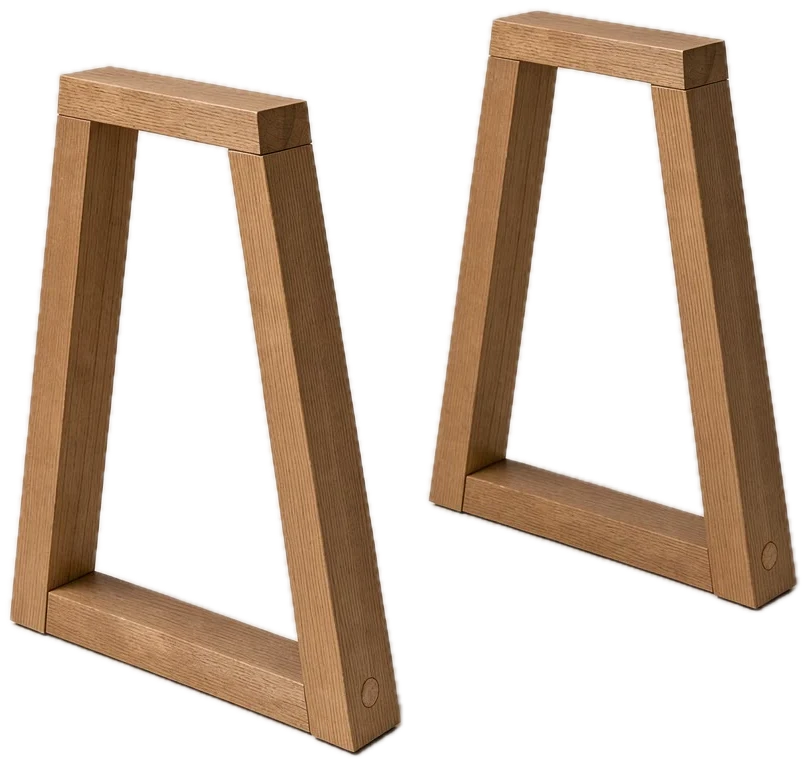

Pytanie o wymiar albo materiał? Doradca: 600 000 000, wt. do sob. 10:00 do 18:00.
Z bliska
Za co pokochasz stół Długi
Zaleta 1 z 3
Blat 4 cm, z jednej partii drewna
Deski wybieramy z jednej partii drewna i układamy tak, żeby słoje przechodziły z jednej w drugą. Krawędź fazujemy ręcznie, więc nie pęka przy pierwszym uderzeniu krzesłem.
6 desek na pióro i wpust
Drewno o wilgotności 8 do 10%
Zaleta 2 z 3
Ramy na czop, stół się nie kiwa
Każda noga to zamknięta rama w kształcie trapezu z belek 8 × 8 cm, łączona na czop i drewniany kołek. Ramy są cofnięte od końców blatu, więc krzesła wchodzą z każdej strony.
Belka 8 × 8 cm
Stopki do poziomowania o 1 cm
Zaleta 3 z 3
Olej zamiast lakieru, rysa znika w 20 minut
Olej twardy wnika w drewno zamiast tworzyć powłokę, a woda zostaje na nim kroplami. Rysę szlifujesz papierem 240 i olejujesz miejscowo, bez lakierowania całego blatu.
Dwie warstwy nakładane ręcznie
Zestaw pielęgnacyjny w komplecie
Konstrukcja
Jak trzyma się 76 kg dębu
Przewiń, a stół rozłoży się na części. Bez metalowych kątowników i bez płyty: tylko drewno, klej i połączenia stolarskie.
Wpust i pióroDeski zachodzą na siebie, więc blat nie rozchodzi się na łączeniach.

Dwie ramy trapezoweBelki 8 × 8 cm łączone na czop i kołek, na stopkach do poziomowania.
Specyfikacja
Wymiary i materiały
Szerokość 95 cm. Długości do wyboru: 180, 220 i 260 cm.
Pielęgnacja
Na co dzień przecieraj blat wilgotną ściereczką. Gorące naczynia stawiaj na podkładkach. Raz w roku nałóż cienką warstwę oleju z zestawu i po 20 minutach zbierz nadmiar.
Specyfikacja: Stół Długi
Długość i szerokość
180 × 90, 220 × 95 lub 260 × 100 cm
Wysokość
75 cm
Grubość blatu
4 cm, lite drewno klejone z desek
Drewno
Dąb europejski lub orzech amerykański, suszony komorowo do wilgotności 8 do 10%
Wykończenie
Olej twardy, dwie warstwy, nakładany ręcznie
Waga
Od 62 do 88 kg
Producent i miejsce produkcji
Słoje sp. z o.o., pracownia w Ostrzeszowie, Polska
Gwarancja
10 lat na konstrukcję i klejenie
Skala
Osiem osób przy jednym stole
Rysunek zachowuje proporcje: stół stoi obok zwykłych drzwi wewnętrznych. Blat ma 95 cm szerokości, więc wnosimy go bokiem przez drzwi 80 cm, a ramy nóg skręcamy na miejscu.
Miejsce
od 3,4 × 2,4 m z odsuniętymi krzesłami
Rysunek poglądowy w skali. Stół 220 × 95 cm, drzwi 80 × 200 cm.
Porównanie
Długi kontra typowy stół z rynku
Stół z forniru wygląda podobnie pierwszego dnia. Różnicę widać przy pierwszej rysie i przy przeprowadzce.
Drewno, które można zeszlifować
Długi40 mm
Typowy0,6 mm
Waga stołu 220 cm
Długi76 kg
Typowy38 kg
Gwarancja na konstrukcję
Długi10 lat
Typowy2 lata
Czas na zwrot
Długi100 dni
Typowy14 dni
Porównanie stołu Długi z typowym stołem w podobnej cenie
Cecha
Stół Długi
Typowy stół w podobnej cenie
Blat
Lite drewno 4 cm, 6 desek na pióro
Płyta wiórowa okleinowana fornirem
Rysa
Szlifujesz i olejujesz miejscowo
Zostaje albo wymiana blatu
Wykończenie
Olej twardy, odnawiany w domu
Lakier, odnawiany w zakładzie
Dostawa
Wniesienie i montaż w cenie
Paczka do samodzielnego złożenia
Naprawa
Stolarz przyjeżdża do domu
Wysyłka do serwisu
Typowy stół to zestaw parametrów często spotykanych w stołach w podobnym przedziale cenowym, bez wskazywania konkretnych sklepów. Wszystkie dane w tym demo są przykładowe.
Opinie
Opinie o stole Długi
4,9
86 opinii
578
47
31
20
10
Ciężki i solidny
Stół jest ciężki, solidny i pachnie olejem. Co tydzień dostawaliśmy zdjęcia z pracowni, więc czekanie było całkiem przyjemne.
Tomasz W., Wrocław, 19.08.2026 · dąb, 220 cm
Zweryfikowany zakup
Rysa zniknęła po olejowaniu
Syn porysował blat widelcem. Papier ścierny 240 i olej z zestawu, po rysie nie ma śladu.
Kasia R., Opole, 03.07.2026 · dąb, 180 cm
Zweryfikowany zakup
Piękny, ale sprawdź windę
Blat 260 cm nie wszedł do windy, ekipa wniosła go schodami na czwarte piętro. Warto zmierzyć klatkę przed zamówieniem.
Michał P., Warszawa, 11.05.2026 · orzech, 260 cm
Zweryfikowany zakup
Opinie zbieramy mailem 30 dni po dostawie, tylko od osób, które kupiły mebel. Publikujemy także oceny krytyczne. Opinie w tym demo są przykładowe.
Blat wnoszą dwie osoby bokiem, ramy nóg skręcamy na miejscu. Przy wersji 260 cm sprawdź, czy blat zmieści się na zakręcie klatki, albo wyślij nam zdjęcie, odpowiemy w 24 godziny.
Czy mogę zamówić inny wymiar?
Tak, robimy stoły od 160 do 300 cm długości co 10 cm. Wycenę wymiaru na zamówienie wyślemy mailem w 1 dzień roboczy.
Co z gorącymi naczyniami i winem?
Olej twardy znosi rozlaną wodę i wino, jeśli wytrzesz je w ciągu kilku minut. Gorące garnki stawiaj na podkładkach. Jasny ślad po kubku usuniesz olejem z zestawu.
Co jeśli stół mi nie odpowiada?
Masz 100 dni na zwrot. Odbieramy stół sami, a pieniądze oddajemy w 14 dni od odbioru. Zasady zwrotów